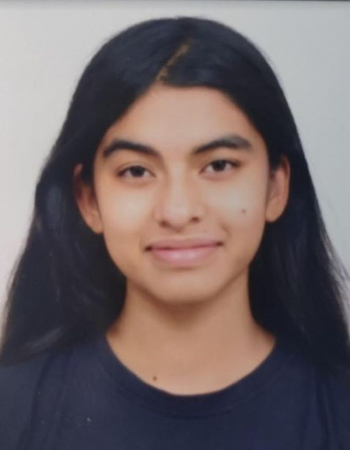

Aadrita.space

I am a third year (final year) student pursuing a B.Sc. (Hons) in Mathematics and Computer Science at Chennai Mathematical Institute, India.
My interests have shifted a lot, but I do seem to be consistently interested in things which Conway was, and in general in sort of discrete, combinatorial things. My favourite courses so far have probably Discrete Mathematics, Theory of Computation, Algebra II (Group Theory), and Combinatorial Group Theory. I also enjoy programming a lot and writing code to illustrate math-related things.
I have had an interest in Knot Theory from even before joining CMI, which turned into an interest in Combinatorial Group Theory, which turned into an interested in Tilings, and in particular Heesch's Tiling Problem. I was also interested in Combinatorial Game (note 'Game' and not 'Group') Theory from before joining CMI. I am still interested in both of these to some extent, but haven't had much time to pursue them.
As of the last few months, I have been interested in Automatic sequences and Automatic numbers.
This semester, I have started to give talks occasionally. Link to slides/references (none of these are LaTeXed):
- Hilbert's Tenth Problem. 29 August 2025: More or less presenting the first five chapters of 'Hilbert's Tenth Problem' by Yuri Matiyasevich (a great book!), which concerns the proof of undecidability of solvability of Diophantine Equations. I tried to present things as they were found chronollogically and to highlight the people and the story behind the development of the proof.
- On the Heesch Number for the Hyperbolic Plane, 12 August 2025: The Heesch Problem is an open problem in tiling concerning the maximum number of 'layers' a shape can surround itself by in the real plane. Its analogue for hyperbolic space has been resolved. The talk was also a rough introduction to Hyperbolic Space.
- The Word Problem, 31 July 2025: An introduction to free groups, group presentations, the proof of the Word Problem (main idea is to simulate the halting problem for Turing Machines with groups) first for semigroups and then for groups, looking at interesting related theorems/proofs (Adian-Rabin Theorem etc.), HNN extensions and looking at some particular examples of groups where the word problem is solved (e.g. residually finite groups, Garside Normal Form for braid groups etc.)
I have also been trying to run a reading group on Combinatorial Game Theory along with another student. We are currently following these notes by Prof. Urban Larsson, and plan to later move on to a combination of 'Winning Ways for your Mathematical Plays' (Berlekamp, Conway, and Guy), 'Lessons in Play: An Introduction to Combinatorial Game Theory' (Albert, Nowakowski, Wolfe) and hopefully even do some research on the open problems presented in 'Combinatorial Game Theory' (Siegal). I would also like to cover learning to use the CG-Suite software developed by Siegal :)